Зв'язки з рф-ринком: інфраструктура і цифровий слід
Короткий огляд
Rentafont — сервіс оренди та дистрибуції шрифтів, який публічно позиціонувався як український продукт, але впродовж 2013–2023 років зберігав довготривалі технічні, ринкові та партнерські зв'язки з російським середовищем. Кейс розглядався як OSINT-based due diligence у контексті українських дискусій про національний державний шрифт і ширшу відмову від російського технічного та культурного продукту після повномасштабного вторгнення 2022 року.
Стандартний OSINT-цикл: збір, кореляція, валідація та повторна перевірка. Джерела: WHOIS-історія для rentafont.ru, аналіз DNS/MX/NS/SOA для rentafont.com, rentafont.com.ua і tilda.rentafont.com, веб-архіви, дані BuiltWith, хостингові сліди з myip.ms, публічні заяви власника в DOU, Facebook і Medium. Окремий елемент — технічний peer review у DOU-треді для перевірки спірних технічних тверджень щодо контролю над tilda.rentafont.com.
rentafont.ru зареєстрований у грудні 2012 року і залишався активним після початку повномасштабної війни; WHOIS-записи показують продовження у грудні 2022 року до 5 грудня 2023 року..ru не відбулася одразу після 24.02.2022.tilda.rentafont.com залишався окремою технічною проблемою; публічна технічна дискусія показала, що версія про його «захоплення росіянами» є технічно малоймовірною без втрати контролю над основним доменом.Сукупність технічних, ринкових та історичних даних свідчить, що Rentafont був глибоко інтегрований у російський ринок та інфраструктурне середовище, а не лише мав епізодичні зв'язки з РФ. Гіпотеза про швидкий і повний розрив після 24.02.2022 не підтвердилася; дані підтримують висновок про затриманий і частковий вихід із російського контуру, сліди якого зберігалися щонайменше до 2023 року.
Ключовою проблемою виявився не декларований намір власника, а розрив між публічними заявами та спостережуваним цифровим слідом. Для державних, культурних та ідентичнісно чутливих ініціатив це створювало репутаційний ризик у разі позиціонування сервісу як «національного» партнера без прозорого розкриття його історії.
Повний кейс
Rentafont — сервіс оренди й продажу шрифтів, який працює через веб-інтерфейс (rentafont.com, rentafont.com.ua) та інтеграції з іншими платформами й спеціальним клієнтським застосунком. У 2010-х роках сервіс позиціонував себе як «український» продукт із юридичною прив'язкою до американської юрисдикції, водночас будуючи значну частину каталогу та клієнтської бази на російському ринку.
Після повномасштабного вторгнення РФ проти України у 2022 році в Україні загострилася дискусія про відмову від російського технічного й культурного продукту, зокрема шрифтів, у державній та публічній комунікації. Верховна Рада розглядала питання відмови від шрифтів російського походження, а професійна спільнота обговорювала можливі моделі національного державного шрифту й роль абетки «Рутенія».
У листопаді 2023 року в Українському кризовому медіа-центрі відбувся круглий стіл «Національний державний шрифт — яким йому бути?», який започаткував ширшу дискусію за участі істориків, мистецтвознавців, дизайнерів, юристів і представників академічних інституцій. У цьому контексті залучення сервісів із тривалими зв'язками з російським ринком до робочих процесів, пов'язаних із формуванням української шрифтової політики, потребувало окремої перевірки їхнього цифрового сліду.
Євген Садко публічно заявляв, що після 24.02.2022 співпраця з російськими структурами припинена, російські шрифти зняті, а домен у зоні .ru більше не продовжується. На цьому тлі було ініційовано OSINT-дослідження як процедуру due diligence: перевірити, наскільки ці заяви відповідають фактичному стану доменної, технічної та ринкової інфраструктури сервісу і яким був реальний характер та тривалість його інтеграції з російським середовищем.
На старті були сформульовані дві робочі гіпотези:
H1 — після 24.02.2022 сервіс Rentafont у короткий термін припинив співпрацю з російськими структурами, зняв російські шрифти з оренди й продажу, відмовився від домена в зоні .ru та ліквідував технічні залежності від російських сервісів; фактичний цифровий слід відповідає цим заявам.
H2 — попри публічні заяви, частина технічних, ринкових і партнерських зв'язків із РФ продовжувала існувати у 2022–2023 роках (продовження домена rentafont.ru, збереження інтеграції через tilda.rentafont.com, наявність залишкових MX-записів на російські сервіси, домінування російського ринку).
Завданням було за допомогою відкритих джерел верифікувати, яка з гіпотез краще узгоджується з фактичними даними.
До предмету дослідження входили:
Питання художньої цінності шрифтів і внутрішніх творчих суперечок не розглядалися.
Збір даних здійснювався через:
rentafont.ru за 2012–2024 роки, включно з датами створення, продовження, змінами власника й статусів.rentafont.com, rentafont.com.ua, tilda.rentafont.com та допоміжних піддоменів.rentafont.ru (зокрема IP 95.217.73.163 станом на 6 серпня 2023 року).Перевірка інформації будувалася на:
Особливу роль відіграв peer review у технічних спільнотах: дискусії на DOU дозволили залучити зовнішніх фахівців для оцінки правдоподібності окремих технічних тверджень (зокрема щодо контролю над tilda.rentafont.com).
Історичні записи показують, що домен rentafont.ru був зареєстрований 5 грудня 2012 року й регулярно продовжувався до 2023 року. На 1 січня 2022 року він був оплачений до 5 грудня 2022 року, а 6 грудня 2022 року — продовжений до 5 грудня 2023 року, тобто вже після початку повномасштабної війни. Домен залишався активним щонайменше до серпня 2023 року, про що свідчать записи myip.ms щодо IP 95.217.73.163.
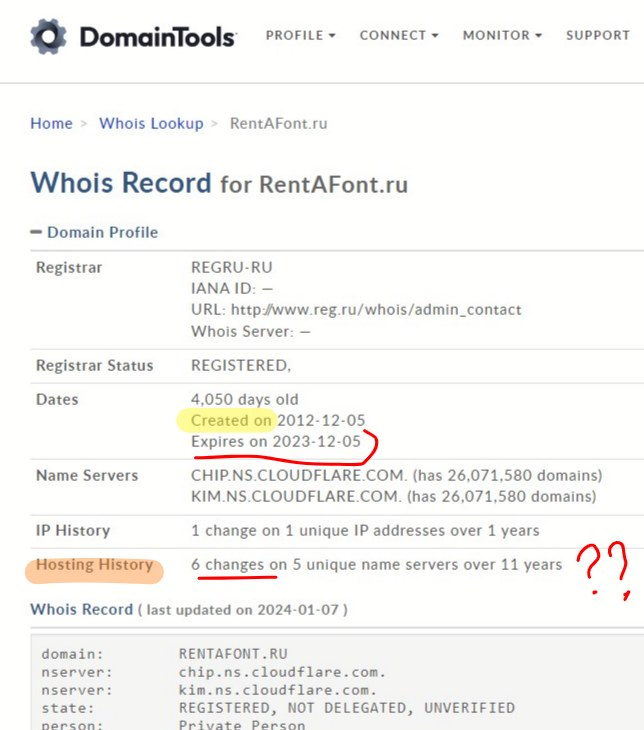
rentafont.ru продовжено у грудні 2022 до 05.12.2023 — реєстратор REGRU-RU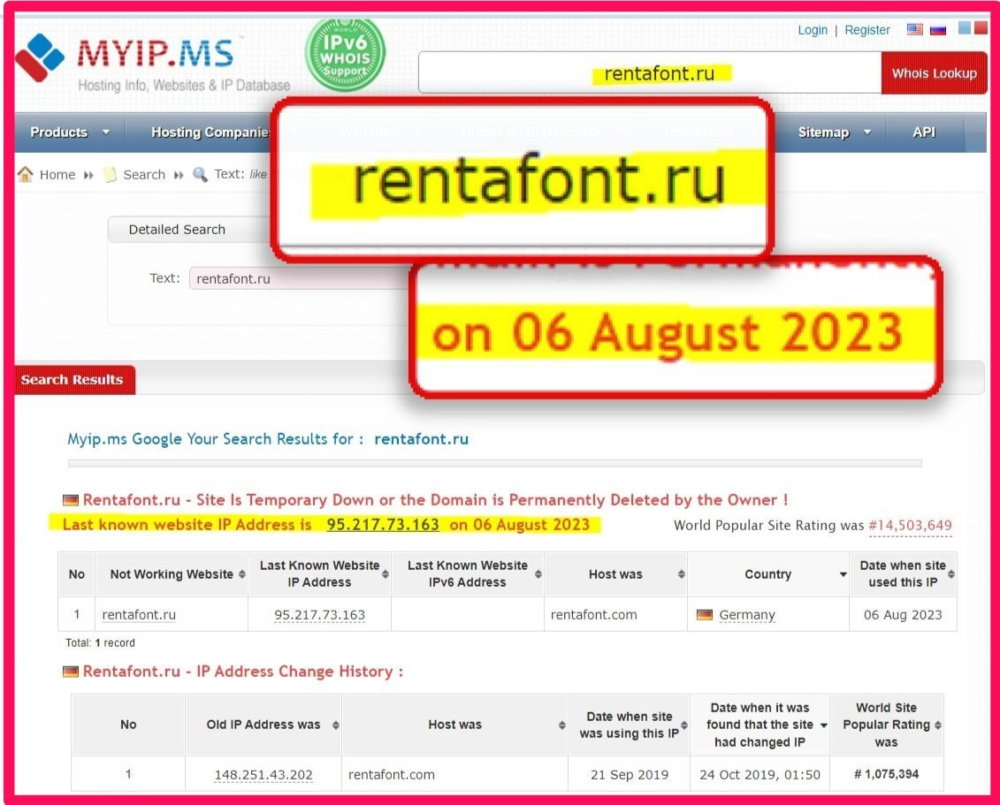
rentafont.ru на IP 95.217.73.163 (Hetzner, Nimecchyna) — 6 серпня 2023, 17 місяців після публічних обіцянокЛише після завершення оплаченого періоду в грудні 2023 року домен не був продовжений попереднім власником і в січні 2024 року був перереєстрований на REG.RU як новий запис — що відповідає сценарію, коли домен переходить під контроль реєстратора після відмови власника його підтримувати.
Основні домени сервісу — rentafont.com і rentafont.com.ua — обслуговувалися через окремі конфігурації NS/MX; в окремих періодах фіксувалися MX-записи, пов'язані з російським поштовим сервісом Yandex, як частина старої інфраструктури. Існували також допоміжні піддомени (vernacular, mx, mx2), які не завжди вчасно очищувалися від залежностей від російських сервісів.
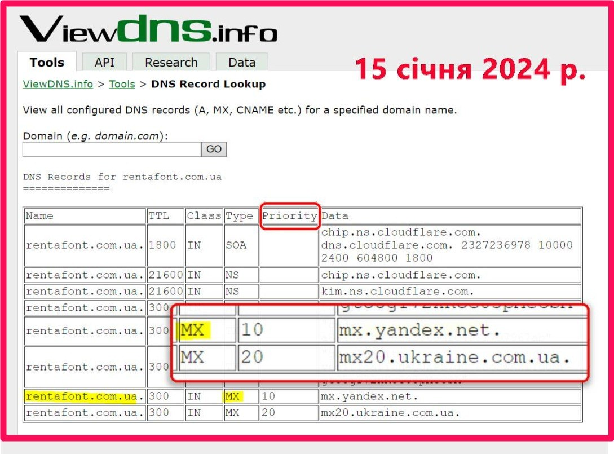
rentafont.com.ua MX = mx.yandex.net (пріоритет 10) — Яндекс-пошта в DNS майже через два роки після початку вторгненняПіддомен tilda.rentafont.com використовувався як інтеграційний вузол між Rentafont і конструктором сайтів Tilda для доставки веб-шрифтів на сайти користувачів. Євген Садко стверджував, що після 2022 року «втратив контроль» над цим піддоменом, а російська сторона «якось» зберегла його у себе.
Аналіз NS/SOA-записів та обговорення з DevOps-фахівцями показали, що власник основного домена rentafont.com загалом зберігає контроль над субдоменами, навіть якщо делегує їх на інші сервери; технічна спільнота дійшла висновку, що піддомен не може бути «вкрадений» без втрати контролю над самим доменом. Водночас Садко визнав, що зі «старих» сайтів на Tilda все ще надходили запити до цього піддомену (близько 100 на день), що підтверджує наявність активного інтеграційного сліду й після 2022 року.
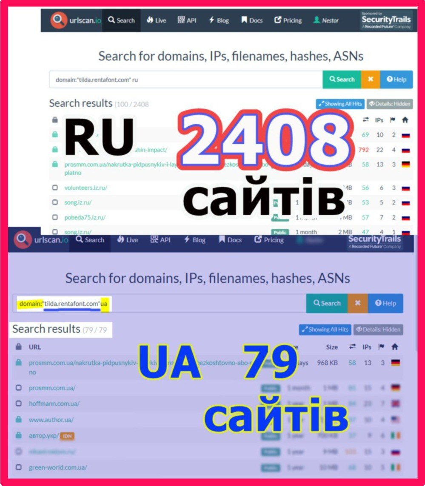
tilda.rentafont.com шрифти завантажуються на 2 408 сайтів у зоні .ru проти 79 .ua — початок 2023 р.За даними BuiltWith, на лютий 2022 року віджет Rentafont використовувався приблизно на 7 700 російських сайтах і близько 500 українських, тобто співвідношення користувачів РФ до українських становило близько 20–25:1. У деяких рейтингах сервіс входив до числа найпопулярніших провайдерів веб-шрифтів у РФ.
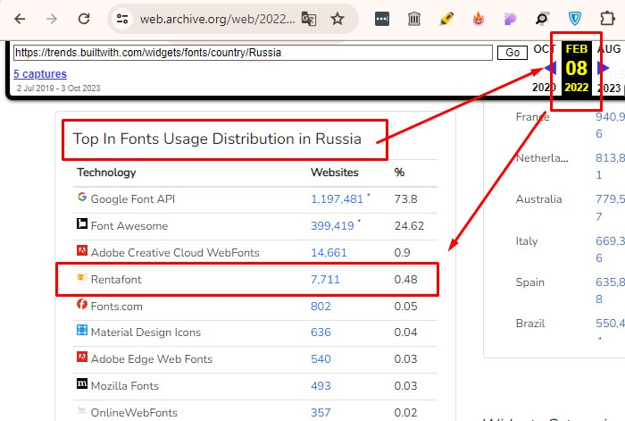
У відкритих джерелах були задокументовані зв'язки сервісу з Tilda, Paratype, видавництвом «РОСМЭН», газетою «Известия» та іншими російськими структурами. Євген Садко публічно визнавав, що з 2013 року співпрацював із російськими шрифтовими студіями, а частину каталогу сервісу на старті формували саме їхні роботи; припинення співпраці та зняття російських шрифтів із сервісу він прив'язував до періоду після 2022 року.
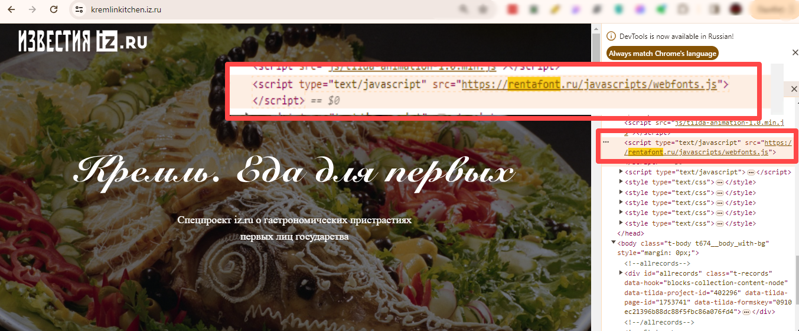
rentafont.ru/assets/webfonts.js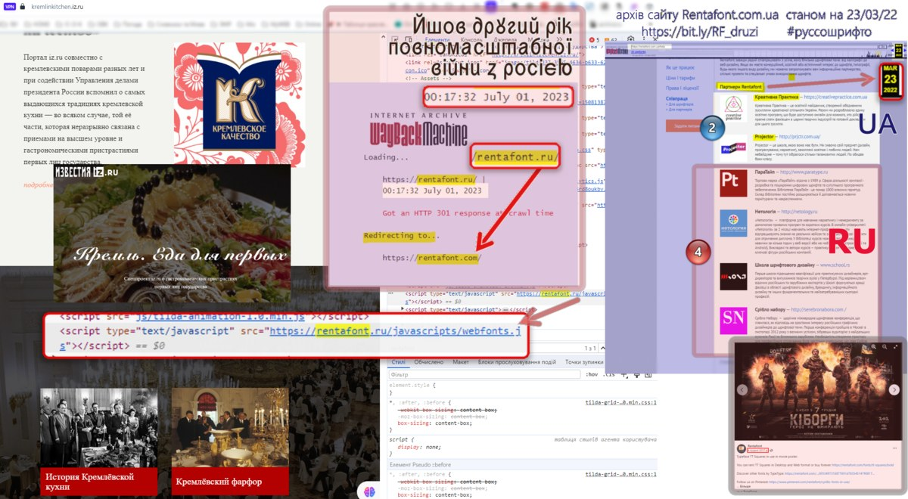
Євген Садко формував публічний образ сервісу як українського та антиросійського. Паралельний аналіз цифрового сліду дозволяє зіставити ці заяви з верифікованими артефактами за датами.
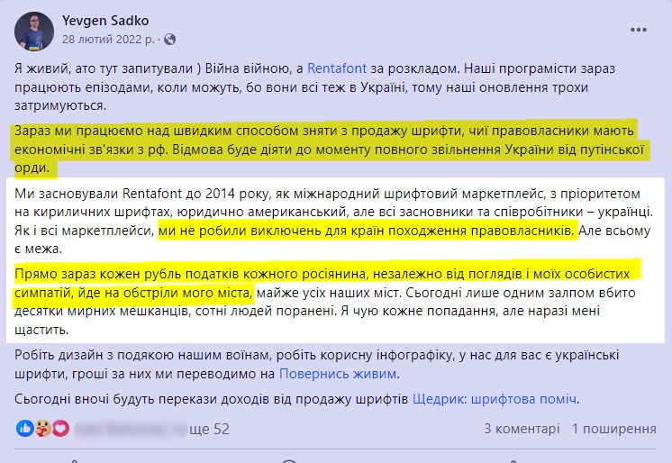
| Дата | Слова (публічні заяви) | Справи (цифровий слід) |
|---|---|---|
| 2017–2021 | Rentafont = "міжнародний маркетплейс, юридично американський, засновники — українці". Садко (01.2021): "2020 рік — найкращий і найуспішніший для Rentafont і для українських шрифторобів". | Tilda Telegram (10.2017): "шрифти надано сервісом Rentafont — безкоштовно для користувачів Tilda". Tilda Telegram (04.2018): звертається до російських користувачів — рекомендує Rentafont як альтернативу Google Fonts при блокуванні. Відношення .ru/.ua ≈ 20–25:1. |
| 28.02.2022 (+4 дні після вторгнення) |
FB: "Прямо зараз кожен рубль податків кожного росіянина іде на обстріли мого міста". "Зараз ми працюємо над швидким способом зняти з продажу шрифти, чиї правовласники мають економічні зв'язки з рф". Обіцяє донейшн від продажу шрифтів. | — |
| Грудень 2022 (9.5 міс. пізніше) |
— | DomainTools / WHOIS: rentafont.ru продовжено до 05.12.2023. Реєстратор: REGRU-RU. Домен залишається активним після всіх обіцянок. |
| 02.03.2023 | Садко для Speka: Golos від Paratype = "фашистський шрифт на замовлення гестапо". "Ці росіяни отримали гроші" — засуджує тих, хто заробляє на рф-ринку. Власний бот Rentafont публікує "Список рос. шрифторобів": критерій бойкоту — "платить податки в рф". | rentafont.ru активний. tilda.rentafont.com — 2 408 .ru сайтів проти 79 .ua. Terms of Service сайту — виключно рос. мовою, rentafont.ru вказаний у тексті. |
| 11.03.2023 (9 днів потому) |
— | Paratype (info.paratype.ru): арт-директор рекомендує Rentafont як опцію для Tilda — через 9 днів після того, як Садко назвав Paratype "прокремлівськими". Партнерський зв'язок зберігається. |
| 01.07.2023 | — | Wayback Machine: rentafont.ru → HTTP 301 redirect → rentafont.com. Домен живий. |
| 06.08.2023 | — | myip.ms: останній відомий IP rentafont.ru = 95.217.73.163 (Hetzner, Німеччина). Статус: "Temporary Down or Permanently Deleted by the Owner" — тобто домен щойно деактивовано, через 17 місяців після обіцянок. |
| 12.12.2023 | — | Telegram: бот Rentafont_ru активно надсилає пропозиції купити шрифти (Kyiv, Skaryna, Rutenia тощо). |
| 15.01.2024 | — | ViewDNS.info: rentafont.com.ua MX = mx.yandex.net (пріоритет 10). Яндекс-пошта залишається в DNS майже через два роки після вторгнення. |
Ключове протиріччя
2 березня 2023 Садко публічно засуджує тих, хто "отримав рублі від Росії" і встановлює критерій власного бойкоту: "платить податки в рф". За цим критерієм Rentafont підпадав під власний бойкот — реєстраційний збір за rentafont.ru сплачувався до REGRU-RU (рос. реєстратор) аж до грудня 2023 року. Водночас через 9 днів після найгострішої публічної заяви партнер Paratype рекомендує Rentafont рос. аудиторії, а домен .ru залишається активним ще 5 місяців.
Дослідження не стверджує навмисної співпраці з агресором після 24.02.2022. Зафіксований факт інший: терміни деактивації вимірюються не тижнями (як можна було очікувати із заяв), а 12–22 місяцями — і відбуваються паралельно з найгострішими публічними деклараціями.
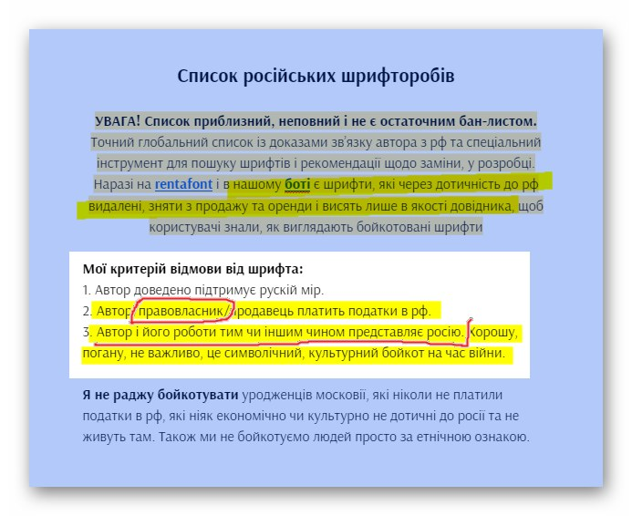
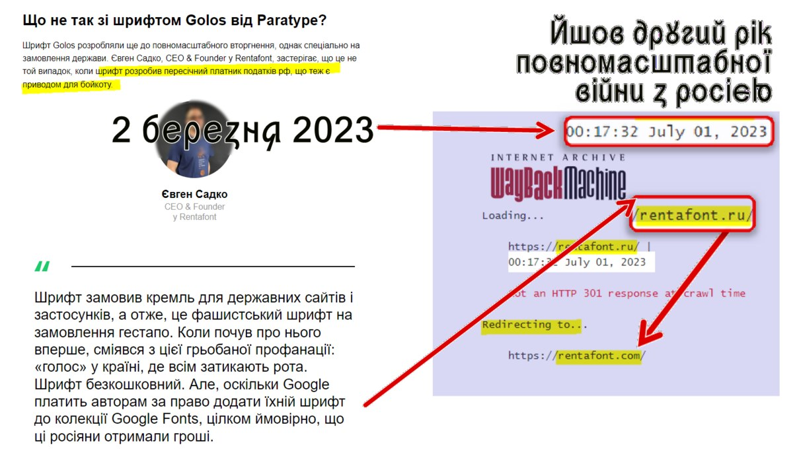
rentafont.ru в липні 2023, через 5 місяців після заяви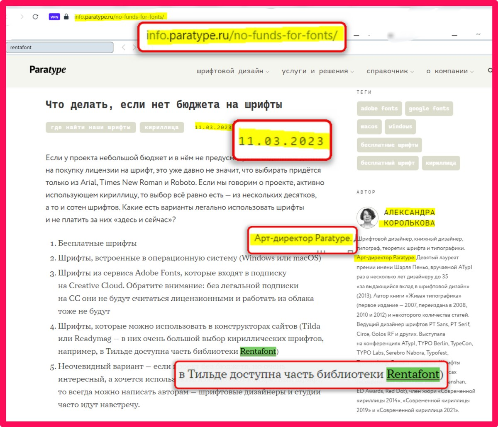
Після оприлюднення OSINT-матеріалів Євген Садко у публічних поясненнях підтвердив продовження домена .ru у 2022 році (посилаючись на технічну залежність бекенду), визнав історичну співпрацю з рос. студіями та наявність технічних залишків (Yandex MX, застарілі скрипти). Центральні артефакти не були спростовані; запропоновано іншу інтерпретацію мотивів — але не самих фактів.
Сукупність доменної історії, DNS-даних, ринкової статистики та публічних заяв показує, що Rentafont у 2013–2023 роках був глибоко інтегрований у російський ринок і технічну інфраструктуру, навіть при одночасному позиціонуванні як «український» сервіс. Гіпотеза H1 про швидкий і повний розрив зв'язків після 24.02.2022 не підтвердилася: домен rentafont.ru був продовжений у грудні 2022 року, працював принаймні до середини 2023 року, а інтеграційний слід Tilda та інші технічні залишки зберігалися й надалі.
Гіпотеза H2 — про поступовий і неповний вихід із російського контуру — отримала значне підтвердження. Дослідження не стверджує продовження повномасштабної комерційної співпраці на довоєнному рівні після 2022 року, але засвідчує тривалу присутність сервісу в російському цифровому середовищі та затримку з деактивацією пов'язаних доменів і інтеграцій.
З погляду репутаційного й політичного ризику це означає, що залучення Rentafont як символічного або «національного» партнера у проєктах, пов'язаних із державним шрифтом, є чутливим рішенням і потребує окремої, прозорої аргументації. Причина полягає не лише в історичній співпраці, а в розриві між публічними деклараціями та фактичним цифровим слідом у критичний період.
У 2023–2024 роках результати дослідження були використані як аналітична основа для оцінки доцільності участі окремих сервісів і фахівців у публічних заходах, пов'язаних із національним шрифтом та гуманітарною безпекою. Це дозволило організаторам дискусій опиратися не лише на репутаційне враження, а на зафіксований цифровий слід сервісу, його доменну історію та ринкову поведінку.
Публічна реакція Садка, який підтвердив факти продовження домена .ru, історичної співпраці з російськими студіями й частини технічних залишків, виконала роль додаткового джерела даних і підтвердження ключових артефактів. Це перетворило кейс із разового викриття на ітеративне розслідування, де первинні висновки уточнювалися з урахуванням нових фактів і пояснень.
У 2026 році, в контексті виставкового проєкту «Чебаник Incognitus» у Музеї книги і друкарства України, веб-архіви фіксують зміну в публічній комунікації: знімок сторінки від 25 травня 2026 року показує логотип Rentafont серед партнерів або організаторів, тоді як у версії від 4 червня 2026 року логотип відсутній. Це свідчить, що питання участі сервісу в гуманітарно чутливих проєктах залишалося актуальним і через кілька років, а раніше зібраний OSINT-масив продовжував впливати на рішення інституцій щодо партнерств.
Кейс демонструє, як стандартні інструменти OSINT (WHOIS, DNS, веб-архіви, market-intel, публічні дискусії) можуть бути інтегровані у процедуру due diligence для гуманітарно чутливих тем і як результати такого дослідження можуть мати як короткостроковий, так і відкладений вплив на рішення державних і культурних інституцій. Він також показує, що ефективний аналітичний продукт — це не лише опис фактів, а й побудова підтверджуваної часової лінії, верифікація спірних тверджень через peer review та документування змін поведінки об'єкта після публікації.